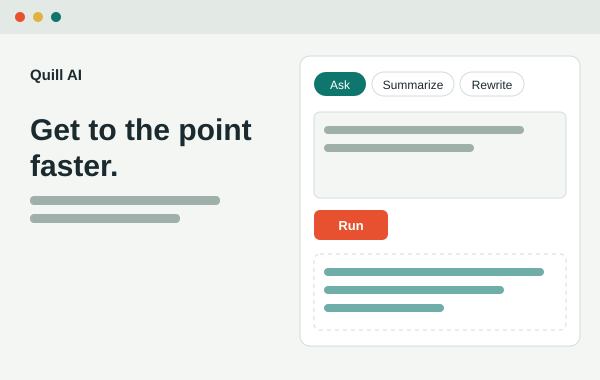

Quill AI
A one-page site with a live AI demo. Visitors can ask a question, summarize long text, rewrite a message in a better tone or get a plain-language explanation of code.
- Why I built it
- To show how a marketing team could turn everyday writing tasks into quick AI tools.
- How it works
- The page sends text to a small server function, which asks the Gemini AI model for an answer. The API key stays on the server.
- Built with
- HTML, CSS, JavaScript, Vercel and the Gemini API.